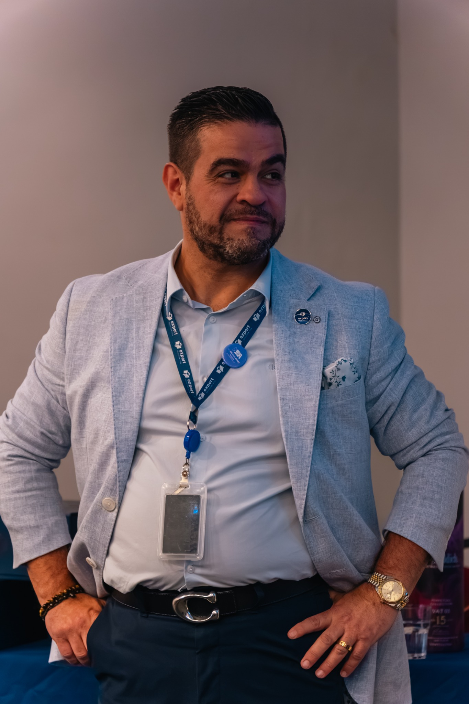
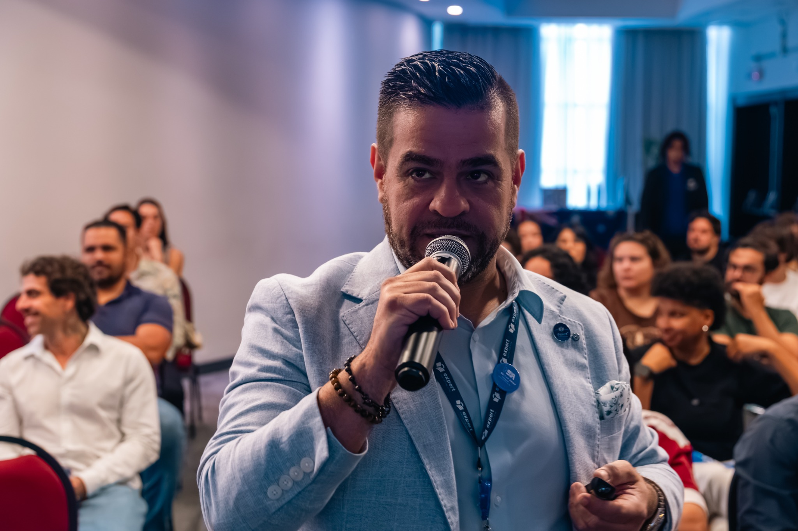

Reconheça seu ponto de partida
Explore sua situação atual, valores, prioridades e os desafios que precisam de atenção.
Mentoria online ao vivo · Turma novembro 2026
Quatro semanas para conhecer seu ponto de partida, ganhar clareza sobre sua direção e construir seu Mapa Estratégico da Travessia, com Marcelo Lusardo.

Uma metodologia para sua própria história
A experiência de Marcelo começou com sua travessia para a Austrália. Nesta mentoria, o foco é a sua jornada: uma transição de carreira, uma nova fase pessoal, um negócio, um propósito ou uma decisão que você precisa transformar em plano.
Explore sua situação atual, valores, prioridades e os desafios que precisam de atenção.
Transforme suas intenções em objetivos pessoais claros e prioridades estratégicas.
Organize metas e iniciativas em um Mapa Estratégico da Travessia que oriente suas próximas decisões.
Seu itinerário
Encontros online, ao vivo, com duração prevista de 1h30 a 2h cada.
Brasília: 17/11/2026 · 20h
Melbourne: 18/11/2026 · 10h
Brasília: 24/11/2026 · 20h
Melbourne: 25/11/2026 · 10h
Brasília: 01/12/2026 · 20h
Melbourne: 02/12/2026 · 10h
Brasília: 08/12/2026 · 20h
Melbourne: 09/12/2026 · 10h
Horários: Brasília (UTC−3) e Melbourne (AEDT, UTC+11).
Quem conduz sua travessia
Autor de Austrália Sem Fronteiras — Líder de Travessias, Marcelo transformou sua experiência de vida e sua travessia internacional em uma proposta de desenvolvimento pessoal com direção estratégica.
A mentoria combina reflexão sobre identidade, definição de objetivos e exercícios práticos para que cada participante construa seu próprio caminho.
Conheça a trajetória de Marcelo →
Inscrições · Novembro 2026
Mentoria online ao vivo · 4 semanas · 4 encontros
Investimento total, em dólares australianos (AUD).
Garantir minha vaga — pagamento seguroPagamento processado pela Stripe. Seu banco pode aplicar conversão de moeda e encargos. As orientações de acesso serão comunicadas após a inscrição.
Antes de embarcar
Não. O método é voltado a travessias pessoais e profissionais de diferentes tipos. A Austrália faz parte da história de Marcelo, mas sua travessia pode ser outra.
Sim. São quatro encontros online ao vivo, com duração prevista de 1h30 a 2h por encontro, nas datas informadas acima.
O valor é A$497, cobrado em dólares australianos. A conversão para reais ou outra moeda depende das condições do seu cartão ou banco.
Após a inscrição, a equipe da mentoria enviará as orientações de acesso usando os dados de contato informados no pagamento.